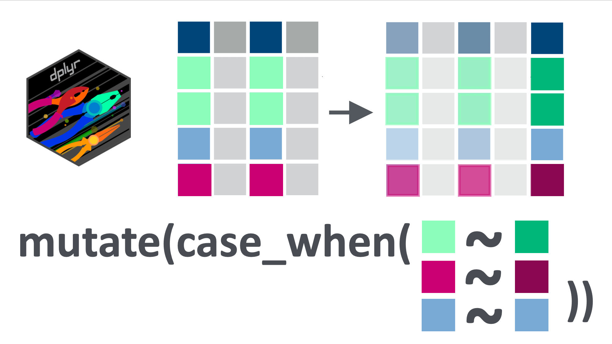
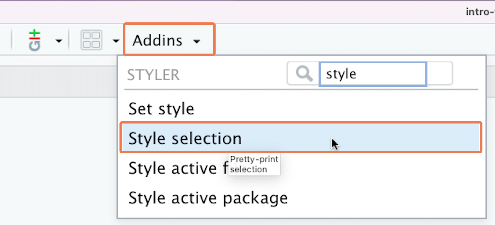
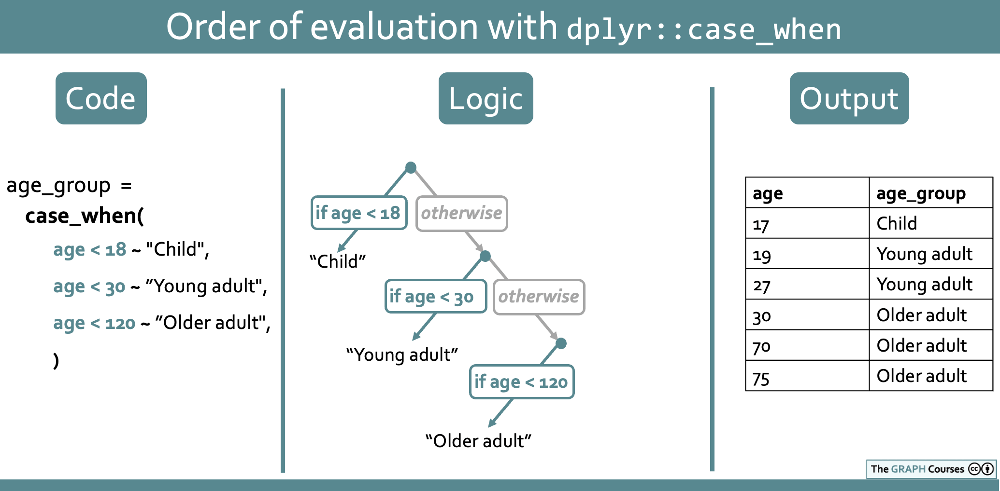
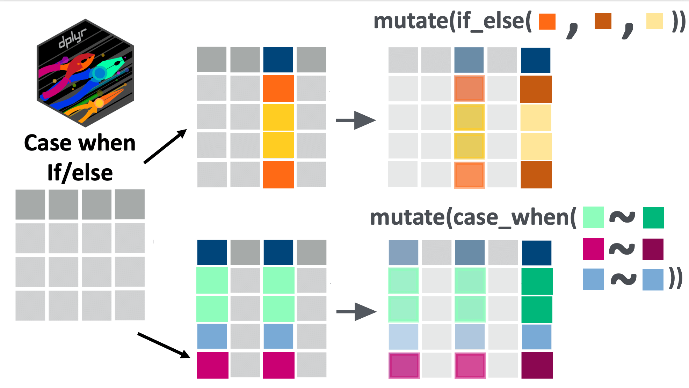

if(!require(pacman)) install.packages("pacman")
pacman::p_load(tidyverse)12 Conditional mutating
12.1 Introduction
In the last lesson, you learned the basics of data transformation using the {dplyr} function mutate().
In that lesson, we mostly looked at global transformations; that is, transformations that did the same thing to an entire variable. In this lesson, we will look at how to conditionally manipulate certain rows based on whether or not they meet defined criteria.
For this, we will mostly use the case_when() function, which you will likely come to see as one of the most important functions in {dplyr} for data wrangling tasks.
Let’s get started.

12.2 Learning objectives
You can transform or create new variables based on conditions using
dplyr::case_when()You know how to use the
TRUEcondition incase_when()to match unmatched cases.You can handle
NAvalues incase_when()transformations.You understand how to keep the default values of a variable in a
case_when()formulaYou can write
case_when()conditions involving multiple comparators and multiple variables.You understand
case_when()conditions priority order.You can use
dplyr::if_else()for binary conditional assignment.
12.3 Packages
This lesson will require the tidyverse suite of packages:
12.4 Datasets
In this lesson, we will again use data from the COVID-19 serological survey conducted in Yaounde, Cameroon.
## Import and view the dataset
yaounde <-
read_csv(here::here('data/yaounde_data.csv')) %>%
## make every 5th age missing
mutate(age = case_when(row_number() %in% seq(5, 900, by = 5) ~ NA_real_,
TRUE ~ age)) %>%
## rename the age variable
rename(age_years = age) %>%
# drop the age category column
select(-age_category)
yaounde# A tibble: 10 × 52
id date_surveyed age_years age_category_3 sex highest_education
<chr> <date> <dbl> <chr> <chr> <chr>
1 BRIQUETERIE_0… 2020-10-22 45 Adult Fema… Secondary
2 BRIQUETERIE_0… 2020-10-24 55 Adult Male University
3 BRIQUETERIE_0… 2020-10-24 23 Adult Male University
4 BRIQUETERIE_0… 2020-10-22 20 Adult Fema… Secondary
5 BRIQUETERIE_0… 2020-10-22 NA Adult Fema… Primary
6 BRIQUETERIE_0… 2020-10-25 17 Child Fema… Secondary
7 BRIQUETERIE_0… 2020-10-25 13 Child Fema… Secondary
8 BRIQUETERIE_0… 2020-10-24 28 Adult Male Doctorate
9 BRIQUETERIE_0… 2020-10-24 30 Adult Male Secondary
10 BRIQUETERIE_0… 2020-10-24 NA Child Fema… Secondary
# ℹ 46 more variables: occupation <chr>, weight_kg <dbl>, height_cm <dbl>,
# is_smoker <chr>, is_pregnant <chr>, is_medicated <chr>, neighborhood <chr>,
# household_with_children <chr>, breadwinner <chr>, source_of_revenue <chr>,
# has_contact_covid <chr>, igg_result <chr>, igm_result <chr>,
# symptoms <chr>, symp_fever <chr>, symp_headache <chr>, symp_cough <chr>,
# symp_rhinitis <chr>, symp_sneezing <chr>, symp_fatigue <chr>,
# symp_muscle_pain <chr>, symp_nausea_or_vomiting <chr>, …Note that in the code chunk above, we slightly modified the age column, artificially introducing some missing values, and we also dropped the age_category column. This is to help illustrate some key points in the tutorial.
For practice questions, we will also use an outbreak linelist of 136 cases of influenza A H7N9 from a 2013 outbreak in China. This is a modified version of a dataset compiled by Kucharski et al. (2014).
## Import and view the dataset
flu_linelist <- read_csv(here::here('data/flu_h7n9_china_2013.csv'))
flu_linelist# A tibble: 10 × 8
case_id date_of_onset date_of_hospitalisation date_of_outcome outcome gender
<dbl> <date> <date> <date> <chr> <chr>
1 1 2013-02-19 NA 2013-03-04 Death m
2 2 2013-02-27 2013-03-03 2013-03-10 Death m
3 3 2013-03-09 2013-03-19 2013-04-09 Death f
4 4 2013-03-19 2013-03-27 NA <NA> f
5 5 2013-03-19 2013-03-30 2013-05-15 Recover f
6 6 2013-03-21 2013-03-28 2013-04-26 Death f
7 7 2013-03-20 2013-03-29 2013-04-09 Death m
8 8 2013-03-07 2013-03-18 2013-03-27 Death m
9 9 2013-03-25 2013-03-25 NA <NA> m
10 10 2013-03-28 2013-04-01 2013-04-03 Death m
# ℹ 2 more variables: age <dbl>, province <chr>12.5 Reminder: relational operators (comparators) in R
Throughout this lesson, you will use a lot of relational operators in R. Recall that relational operators, sometimes called “comparators”, test the relation between two values, and return TRUE, FALSE or NA.
A list of the most common operators is given below:
| Operator | is TRUE if |
| A < B | A is less than B |
| A <= B | A is less than or equal to B |
| A > B | A is greater than B |
| A >= B | A is greater than or equal to B |
| A == B | A is equal to B |
| A != B | A is not equal to B |
| A %in% B | A is an element of B |
12.6 Introduction to case_when()
To get familiar with case_when(), let’s begin with a simple conditional transformation on the age_years column of the yaounde dataset. First we subset the data frame to just the age_years column for easy illustration:
yaounde_age <-
yaounde %>%
select(age_years)
yaounde_age# A tibble: 10 × 1
age_years
<dbl>
1 45
2 55
3 23
4 20
5 NA
6 17
7 13
8 28
9 30
10 NANow, using case_when(), we can make a new column, called “age_group”, that has the value “Child” if the person is below 18, and “Adult” if the person is 18 and up:
yaounde_age %>%
mutate(age_group = case_when(age_years < 18 ~ "Child",
age_years >= 18 ~ "Adult"))# A tibble: 10 × 2
age_years age_group
<dbl> <chr>
1 45 Adult
2 55 Adult
3 23 Adult
4 20 Adult
5 NA <NA>
6 17 Child
7 13 Child
8 28 Adult
9 30 Adult
10 NA <NA> The case_when() syntax may seem a bit foreign, but it is quite simple: on the left-hand side (LHS) of the ~ sign (called a “tilde”), you provide the condition(s) you want to evaluate, and on the right-hand side (RHS), you provide a value to put in if the condition is true.
So the statement case_when(age_years < 18 ~ "Child", age_years >= 18 ~ "Adult") can be read as: “if age_years is below 18, input ‘Child’, else if age_years is greater than or equal to 18, input ‘Adult’”.
Vocab
Formulas, LHS and RHS
Each line of a case_when() call is termed a “formula” or, sometimes, a “two-sided formula”. And each formula has a left-hand side (abbreviated LHS) and right-hand side (abbreviated RHS).
For example, the code age_years < 18 ~ "Child" is a “formula”, its LHS is age_years < 18 while its RHS is "Child".
You are likely to come across these terms when reading the documentation for the case_when() function, and we will also refer to them in this lesson.
After creating a new variable with case_when(), it is a good idea to inspect it thoroughly to make sure it worked as intended.
To inspect the variable, you can pipe your data frame into the View() function to view it in spreadsheet form:
yaounde_age %>%
mutate(age_group = case_when(age_years < 18 ~ "Child",
age_years >= 18 ~ "Adult")) %>%
View()This would open up a new tab in RStudio where you should manually scan through the new column, age_group and the referenced column age_years to make sure your case_when() statement did what you wanted it to do.
You could also pass the new column into the tabyl() function to ensure that the proportions “make sense”:
yaounde_age %>%
mutate(age_group = case_when(age_years < 18 ~ "Child",
age_years >= 18 ~ "Adult")) %>%
tabyl(age_group) age_group n percent valid_percent
Adult 558 0.5746653 0.7054362
Child 233 0.2399588 0.2945638
<NA> 180 0.1853759 NA
Practice
With the flu_linelist data, make a new column, called age_group, that has the value “Below 50” for people under 50 and “50 and above” for people aged 50 and up. Use the case_when() function.
## Complete the code with your answer:
Q_age_group <-
flu_linelist %>%
mutate(age_group = ______________________________)Out of the entire sample of individuals in the flu_linelist dataset, what percentage are confirmed to be below 60? (Repeat the above procedure but with the 60 cutoff, then call tabyl() on the age group variable. Use the percent column, not the valid_percent column.)
## Enter your answer as a WHOLE number without quotes:
Q_age_group_percentage <- YOUR_ANSWER_HERE12.7 The TRUE default argument
In a case_when() statement, you can use a literal TRUE condition to match any rows not yet matched with provided conditions.
For example, if we only keep only the first condition from the previous example, age_years < 18, and define the default value to be TRUE ~ "Not child" then all adults and NA values in the data set will be labeled "Not child" by default.
yaounde_age %>%
mutate(age_group = case_when(age_years < 18 ~ "Child",
TRUE ~ "Not child"))# A tibble: 10 × 2
age_years age_group
<dbl> <chr>
1 45 Not child
2 55 Not child
3 23 Not child
4 20 Not child
5 NA Not child
6 17 Child
7 13 Child
8 28 Not child
9 30 Not child
10 NA Not childThis TRUE condition can be read as “for everything else…”.
So the full case_when() statement used above, age_years < 18 ~ "Child", TRUE ~ "Not child", would then be read as: “if age is below 18, input ‘Child’ and for everyone else not yet matched, input ‘Not child’”.
Watch Out
It is important to use TRUE as the final condition in case_when(). If you use it as the first condition, it will take precedence over all others, as seen here:
yaounde_age %>%
mutate(age_group = case_when(TRUE ~ "Not child",
age_years < 18 ~ "Child"))# A tibble: 10 × 2
age_years age_group
<dbl> <chr>
1 45 Not child
2 55 Not child
3 23 Not child
4 20 Not child
5 NA Not child
6 17 Not child
7 13 Not child
8 28 Not child
9 30 Not child
10 NA Not childAs you can observe, all individuals are now coded with “Not child”, because the TRUE condition was placed first, and therefore took precedence. We will explore the issue of precedence further below.
12.8 Matching NA’s with is.na()
We can match missing values manually with is.na(). Below we match NA ages with is.na() and set their age group to “Missing age”:
yaounde_age %>%
mutate(age_group = case_when(age_years < 18 ~ "Child",
age_years >= 18 ~ "Adult",
is.na(age_years) ~ "Missing age"))# A tibble: 10 × 2
age_years age_group
<dbl> <chr>
1 45 Adult
2 55 Adult
3 23 Adult
4 20 Adult
5 NA Missing age
6 17 Child
7 13 Child
8 28 Adult
9 30 Adult
10 NA Missing age
Practice
As before, using the flu_linelist data, make a new column, called age_group, that has the value “Below 60” for people under 60 and “60 and above” for people aged 60 and up. But this time, also set those with missing ages to “Missing age”.
## Complete the code with your answer:
Q_age_group_nas <-
flu_linelist %>%
Practice
The gender column of the flu_linelist dataset contains the values “f”, “m” and NA:
flu_linelist %>%
tabyl(gender) gender n percent valid_percent
f 39 0.28676471 0.2910448
m 95 0.69852941 0.7089552
<NA> 2 0.01470588 NARecode “f”, “m” and NA to “Female”, “Male” and “Missing gender” respectively. You should modify the existing gender column, not create a new column.
## Complete the code with your answer:
Q_gender_recode <-
flu_linelist %>% 12.9 Keeping default values of a variable
The right-hand side (RHS) of a case_when() formula can also take in a variable from your data frame. This is often useful when you want to change just a few values in a column.
Let’s see an example with the highest_education column, which contains the highest education level attained by a respondent:
yaounde_educ <-
yaounde %>%
select(highest_education)
yaounde_educ# A tibble: 10 × 1
highest_education
<chr>
1 Secondary
2 University
3 University
4 Secondary
5 Primary
6 Secondary
7 Secondary
8 Doctorate
9 Secondary
10 Secondary Below, we create a new column, highest_educ_recode, where we recode both “University” and “Doctorate” to the value “Post-secondary”:
yaounde_educ %>%
mutate(
highest_educ_recode =
case_when(
highest_education %in% c("University", "Doctorate") ~ "Post-secondary"
)
)# A tibble: 10 × 2
highest_education highest_educ_recode
<chr> <chr>
1 Secondary <NA>
2 University Post-secondary
3 University Post-secondary
4 Secondary <NA>
5 Primary <NA>
6 Secondary <NA>
7 Secondary <NA>
8 Doctorate Post-secondary
9 Secondary <NA>
10 Secondary <NA> It worked, but now we have NAs for all other rows. To keep these other rows at their default values, we can add the line TRUE ~ highest_education (with a variable, highest_education, on the right-hand side of a formula):
yaounde_educ %>%
mutate(
highest_educ_recode =
case_when(
highest_education %in% c("University", "Doctorate") ~ "Post-secondary",
TRUE ~ highest_education
)
)# A tibble: 10 × 2
highest_education highest_educ_recode
<chr> <chr>
1 Secondary Secondary
2 University Post-secondary
3 University Post-secondary
4 Secondary Secondary
5 Primary Primary
6 Secondary Secondary
7 Secondary Secondary
8 Doctorate Post-secondary
9 Secondary Secondary
10 Secondary Secondary Now the case_when() statement reads: ‘If highest education is “University” or “Doctorate”, input “Post-secondary”. For everyone else, input the value from highest_education’.
Above we have been putting the recoded values in a separate column, highest_educ_recode, but for this kind of replacement, it is more common to simply overwrite the existing column:
yaounde_educ %>%
mutate(
highest_education =
case_when(
highest_education %in% c("University", "Doctorate") ~ "Post-secondary",
TRUE ~ highest_education
)
)# A tibble: 10 × 1
highest_education
<chr>
1 Secondary
2 Post-secondary
3 Post-secondary
4 Secondary
5 Primary
6 Secondary
7 Secondary
8 Post-secondary
9 Secondary
10 Secondary We can read this last case_when() statement as: ‘If highest education is “University” or “Doctorate”, change the value to “Post-secondary”. For everyone else, leave in the value from highest_education’.
Practice
Using the flu_linelist data, modify the existing column outcome by replacing the value “Recover” with “Recovery”.
## Complete the code with your answer:
Q_recode_recovery <-
flu_linelist (We know it’s a lot of code for such a simple change. Later you will see easier ways to do this.)
Pro Tip
Avoiding long code lines As you start to write increasingly complex case_when() statements, it will become helpful to use line breaks to avoid long lines of code.
To assist with creating line breaks, you can use the {styler} package. Install it with pacman::p_load(styler). Then to reformat any piece of code, highlight the code, click the “Addins” button in RStudio, then click on “Style selection”:

Alternatively, you could highlight the code and use the shortcut Shift + Command/Control + A to use RStudio’s built-in code reformatter.
Sometimes {styler} does a better job at reformatting. Sometimes the built-in reformatter does a better job.
12.10 Multiple conditions on a single variable
LHS conditions in case_when() formulas can have multiple parts. Let’s see an example of this.
But first, we will inspire ourselves from what we learnt in the mutate() lesson and recreate the BMI variable. This involves first converting the height_cm variable to meters, then calculating BMI.
yaounde_BMI <-
yaounde %>%
mutate(height_m = height_cm/100,
BMI = (weight_kg / (height_m)^2)) %>%
select(BMI)
yaounde_BMI# A tibble: 10 × 1
BMI
<dbl>
1 33.3
2 28.0
3 22.8
4 26.0
5 31.0
6 24.8
7 28.9
8 20.7
9 25.3
10 23.9Recall the following BMI categories:
If the BMI is inferior to 18.5, the person is considered underweight.
A normal BMI is greater than or equal to 18.5 and less than 25.
An overweight BMI is greater than or equal to 25 and less than 30.
An obese BMI is BMI is greater than or equal to 30.
The condition BMI >= 18.5 & BMI < 25 to define Normal weight is a compound condition because it has two comparators: >= and <.
yaounde_BMI <-
yaounde_BMI %>%
mutate(BMI_classification = case_when(
BMI < 18.5 ~'Underweight',
BMI >= 18.5 & BMI < 25 ~ 'Normal weight',
BMI >= 25 & BMI < 30 ~ 'Overweight',
BMI >= 30 ~ 'Obese'))
yaounde_BMI# A tibble: 10 × 2
BMI BMI_classification
<dbl> <chr>
1 33.3 Obese
2 28.0 Overweight
3 22.8 Normal weight
4 26.0 Overweight
5 31.0 Obese
6 24.8 Normal weight
7 28.9 Overweight
8 20.7 Normal weight
9 25.3 Overweight
10 23.9 Normal weight Let’s use tabyl() to have a look at our data:
yaounde_BMI %>%
tabyl(BMI_classification)But you can see that the levels of BMI are defined in alphabetical order from Normal weight to Underweight, instead of from lightest (Underweight) to heaviest (Obese). Remember that if you want to have a certain order you can make BMI_classification a factor using mutate() and define its levels.
yaounde_BMI %>%
mutate(BMI_classification = factor(
BMI_classification,
levels = c("Obese",
"Overweight",
"Normal weight",
"Underweight")
)) %>%
tabyl(BMI_classification)
Watch Out
With compound conditions, you should remember to input the variable name everytime there is a comparator. R learners often forget this and will try to run code that looks like this:
yaounde_BMI %>%
mutate(BMI_classification = case_when(BMI < 18.5 ~'Underweight',
BMI >= 18.5 & < 25 ~ 'Normal weight',
BMI >= 25 & < 30 ~ 'Overweight',
BMI >= 30 ~ 'Obese'))The definitions for the “Normal weight” and “Overweight” categories are mistaken. Do you see the problem? Try to run the code to spot the error.
Practice
With the flu_linelist data, make a new column, called adolescent, that has the value “Yes” for people in the 10-19 (at least 10 and less than 20) age group, and “No” for everyone else.
## Complete the code with your answer:
Q_adolescent_grouping <-
flu_linelist %>% 12.11 Multiple conditions on multiple variables
In all examples seen so far, you have only used conditions involving a single variable at a time. But LHS conditions often refer to multiple variables at once.
Let’s see a simple example with age and sex in the yaounde data frame. First, we select just these two variables for easy illustration:
yaounde_age_sex <-
yaounde %>%
select(age_years, sex)
yaounde_age_sex# A tibble: 10 × 2
age_years sex
<dbl> <chr>
1 45 Female
2 55 Male
3 23 Male
4 20 Female
5 NA Female
6 17 Female
7 13 Female
8 28 Male
9 30 Male
10 NA FemaleNow, imagine we want to recruit women and men in the 20-29 age group into two studies. For this we’d like to create a column, called recruit, with the following schema:
- Women aged 20-29 should have the value “Recruit to female study”
- Men aged 20-29 should have the value “Recruit to male study”
- Everyone else should have the value “Do not recruit”
To do this, we run the following case_when statement:
yaounde_age_sex %>%
mutate(recruit = case_when(
sex == "Female" & age_years >= 20 & age_years <= 29 ~ "Recruit to female study",
sex == "Male" & age_years >= 20 & age_years <= 29 ~ "Recruit to male study",
TRUE ~ "Do not recruit"
))# A tibble: 10 × 3
age_years sex recruit
<dbl> <chr> <chr>
1 45 Female Do not recruit
2 55 Male Do not recruit
3 23 Male Recruit to male study
4 20 Female Recruit to female study
5 NA Female Do not recruit
6 17 Female Do not recruit
7 13 Female Do not recruit
8 28 Male Recruit to male study
9 30 Male Do not recruit
10 NA Female Do not recruit You could also add extra pairs of parentheses around the age criteria within each condition:
yaounde_age_sex %>%
mutate(recruit = case_when(
sex == "Female" & (age_years >= 20 & age_years <= 29) ~ "Recruit to female study",
sex == "Male" & (age_years >= 20 & age_years <= 29) ~ "Recruit to male study",
TRUE ~ "Do not recruit"
))This extra pair of parentheses does not change the code output, but it improves coherence because the reader can visually see that your condition is made of two parts, one for gender, sex == "Female", and another for age, (age_years >= 20 & age_years <= 29).
Practice
With the flu_linelist data, make a new column, called recruit with the following schema:
- Individuals aged 30-59 (at least 30, younger than 60) from the Jiangsu province should have the value “Recruit to Jiangsu study”
- Individuals aged 30-59 from the Zhejiang province should have the value “Recruit to Zhejiang study”
- Everyone else should have the value “Do not recruit”
## Complete the code with your answer:
Q_age_province_grouping <-
flu_linelist %>%
mutate(recruit = ______________________________)12.12 Order of priority of conditions in case_when()
Note that the order of conditions is important, because conditions listed at the top of your case_when() statement take priority over others.
To understand this, run the example below:
yaounde_age_sex %>%
mutate(age_group = case_when(age_years < 18 ~ "Child",
age_years < 30 ~ "Young adult",
age_years < 120 ~ "Older adult"))# A tibble: 10 × 3
age_years sex age_group
<dbl> <chr> <chr>
1 45 Female Older adult
2 55 Male Older adult
3 23 Male Young adult
4 20 Female Young adult
5 NA Female <NA>
6 17 Female Child
7 13 Female Child
8 28 Male Young adult
9 30 Male Older adult
10 NA Female <NA> This initially looks like a faulty case_when() statement because the age conditions overlap. For example, the statement age_years < 120 ~ "Older adult" (which reads “if age is below 120, input ‘Older adult’”) suggests that anyone between ages 0 and 120 (even a 1-year old baby!, would be coded as “Older adult”.
But as you saw, the code actually works fine! People under 18 are still coded as “Child”.
What’s going on? Essentially, the case_when() statement is interpreted as a series of branching logical steps, starting with the first condition. So this particular statement can be read as: “If age is below 18, input ‘Child’, and otherwise, if age is below 30, input ‘Young adult’, and otherwise, if age is below 120, input”Older adult”.
This is illustrated in the schematic below:

This means that if you swap the order of the conditions, you will end up with a faulty case_when() statement:
yaounde_age %>%
mutate(age_group = case_when(age_years < 120 ~ "Older adult",
age_years < 30 ~ "Young adult",
age_years < 18 ~ "Child"))# A tibble: 10 × 2
age_years age_group
<dbl> <chr>
1 45 Older adult
2 55 Older adult
3 23 Older adult
4 20 Older adult
5 NA <NA>
6 17 Older adult
7 13 Older adult
8 28 Older adult
9 30 Older adult
10 NA <NA> As you can see, everyone is coded as “Older adult”. This happens because the first condition matches everyone, so there is no one left to match with the subsequent conditions. The statement can be read “If age is below 120, input ‘Older adult’, and otherwise if age is below 30….” But there is no “otherwise” because everyone has already been matched!
This is illustrated in the diagram below:

Although we have spent much time explaining the importance of the order of conditions, in this specific example, there would be a much clearer way to write this code that would not depend on the order of conditions. Rather than leave the age groups open-ended like this:
age_years < 120 ~ "Older adult"
you should actually use closed age bounds like this:
age_years >= 30 & age_years < 120 ~ "Older adult"
which is read: “if age is greater than or equal to 30 and less than 120, input ‘Older adult’”.
With such closed conditions, the order of conditions no longer matters. You get the same result no matter how you arrange the conditions:
## start with "Older adult" condition
yaounde_age %>%
mutate(age_group = case_when(
age_years >= 30 & age_years < 120 ~ "Older adult",
age_years >= 18 & age_years < 30 ~ "Young adult",
age_years >= 0 & age_years < 18 ~ "Child"
))# A tibble: 10 × 2
age_years age_group
<dbl> <chr>
1 45 Older adult
2 55 Older adult
3 23 Young adult
4 20 Young adult
5 NA <NA>
6 17 Child
7 13 Child
8 28 Young adult
9 30 Older adult
10 NA <NA> ## start with "Child" condition
yaounde_age %>%
mutate(age_group = case_when(
age_years >= 0 & age_years < 18 ~ "Child",
age_years >= 18 & age_years < 30 ~ "Young adult",
age_years >= 30 & age_years < 120 ~ "Older adult"
))# A tibble: 10 × 2
age_years age_group
<dbl> <chr>
1 45 Older adult
2 55 Older adult
3 23 Young adult
4 20 Young adult
5 NA <NA>
6 17 Child
7 13 Child
8 28 Young adult
9 30 Older adult
10 NA <NA> Nice and clean!
So why did we spend so much time explaining the importance of condition order if you can simply avoid open-ended categories and not have to worry about condition order?
One reason is that understanding condition order should now help you see why it is important to put the TRUE condition as the final line in your case_when() statement. The TRUE condition matches every row that has not yet been matched, so if you use it first in the case_when() , it will match everyone!
The other reason is that there are certain cases where you may want to use open-ended overlapping conditions, and so you will have to pay attention to the order of conditions. Let’s see one such example now: identifying COVID-like symptoms. Note that this is somewhat advanced material, likely a bit above your current needs. We are introducing it now so you are aware and can stay vigilant with case_when() in the future.
12.12.1 Overlapping conditions within case_when()
We want to identify COVID-like symptoms in our data. Consider the symptoms columns in the yaounde data frame, which indicates which symptoms were experienced by respondents over a 6-month period:
yaounde %>%
select(starts_with("symp_"))# A tibble: 10 × 13
symp_fever symp_headache symp_cough symp_rhinitis symp_sneezing symp_fatigue
<chr> <chr> <chr> <chr> <chr> <chr>
1 No No No No No No
2 No No No No No No
3 No No No No No No
4 No No No Yes Yes No
5 No No No No No No
6 Yes No Yes Yes No No
7 No No No No Yes No
8 No Yes No No No No
9 Yes No No Yes No No
10 No No No No No No
# ℹ 7 more variables: symp_muscle_pain <chr>, symp_nausea_or_vomiting <chr>,
# symp_diarrhoea <chr>, symp_short_breath <chr>, symp_sore_throat <chr>,
# symp_anosmia_or_ageusia <chr>, symp_stomach_ache <chr>We would like to use this to assess whether a person may have had COVID, partly following guidelines recommended by the WHO.
- Individuals with cough are to be classed as “possible COVID cases”
- Individuals with anosmia/ageusia (loss of smell or loss of taste) are to be classed as “probable COVID cases”.
Now, keeping these criteria in mind, consider an individual, let’s call her Osma, who has cough AND anosmia/ageusia? How should we classify Osma?
She meets the criteria for “possible COVID” (because she has cough), but she also meets the criteria for “probable COVID” (because she has anosmia/ageusia). So which group should she be classed as, “possible COVID” or “probable COVID”? Think about it for a minute.
Hopefully you guessed that she should be classed as a “probable COVID case”. “Probable” is more likely than “Possible”; and the anosmia/ageusia symptom is more significant than the cough symptom. One might say that the criterion for “probable COVID” has a higher specificity or a higher precedence than the criterion for “possible COVID”.
Therefore, when constructing a case_when() statement, the “probable COVID” condition should also take higher precedence—it should come first in the conditions provided to case_when(). Let’s see this now.
First we select the relevant variables, for easy illustration. We also identify and slice() specific rows that are useful for the demonstration:
yaounde_symptoms_slice <-
yaounde %>%
select(symp_cough, symp_anosmia_or_ageusia) %>%
# slice of specific rows useful for demo
# Once you find the right code, you would remove this slice
slice(32, 711, 625, 651 )
yaounde_symptoms_slice# A tibble: 4 × 2
symp_cough symp_anosmia_or_ageusia
<chr> <chr>
1 No No
2 Yes No
3 No Yes
4 Yes Yes Now, the correct case_when() statement, which has the “Probable COVID” condition first:
yaounde_symptoms_slice %>%
mutate(covid_status = case_when(
symp_anosmia_or_ageusia == "Yes" ~ "Probable COVID",
symp_cough == "Yes" ~ "Possible COVID"
))# A tibble: 4 × 3
symp_cough symp_anosmia_or_ageusia covid_status
<chr> <chr> <chr>
1 No No <NA>
2 Yes No Possible COVID
3 No Yes Probable COVID
4 Yes Yes Probable COVIDThis case_when() statement can be read in simple terms as ‘If the person has anosmia/ageusia, input “Probable COVID”, and otherwise, if the person has cough, input “Possible COVID”’.
Now, spend some time looking through the output data frame, especially the last three individuals. The individual in row 2 meets the criterion for “Possible COVID” because they have cough (symp_cough == “Yes”), and the individual in row 3 meets the criterion for “Probable COVID” because they have anosmia/ageusia (symp_anosmia_or_ageusia == "Yes").
The individual in row 4 is Osma, who both meets the criteria for “possible COVID” and for “probable COVID”. And because we arranged our case_when() conditions in the right order, she is coded correctly as “probable COVID”. Great!
But notice what happens if we swap the order of the conditions:
yaounde_symptoms_slice %>%
mutate(covid_status = case_when(
symp_cough == "Yes" ~ "Possible COVID",
symp_anosmia_or_ageusia == "Yes" ~ "Probable COVID"
))# A tibble: 4 × 3
symp_cough symp_anosmia_or_ageusia covid_status
<chr> <chr> <chr>
1 No No <NA>
2 Yes No Possible COVID
3 No Yes Probable COVID
4 Yes Yes Possible COVIDOh no! Osma in row 4 is now misclassed as “Possible COVID” even though she has the more significant anosmia/ageusia symptom. This is because the first condition symp_cough == "Yes" matched her first, and so the second condition was not able to match her!
So now you see why you sometimes need to think deeply about the order of your case_when() conditions. It is a minor point, but it can bite you at unexpected times. Even experienced analysts tend to make mistakes that can be traced to improper arrangement of case_when() statements.
Challenge
In reality, there is still another solution to avoid misclassifying the person with cough and anosmia/ageusia. That is to add symp_anosmia_or_ageusia != "Yes" (not equal to “Yes”) to the conditions for “Possible COVID”. Can you think of why this works?
yaounde_symptoms_slice %>%
mutate(covid_status = case_when(
symp_cough == "Yes" & symp_anosmia_or_ageusia != "Yes" ~ "Possible COVID",
symp_anosmia_or_ageusia == "Yes" ~ "Probable COVID"))# A tibble: 4 × 3
symp_cough symp_anosmia_or_ageusia covid_status
<chr> <chr> <chr>
1 No No <NA>
2 Yes No Possible COVID
3 No Yes Probable COVID
4 Yes Yes Probable COVID
Practice
With the flu_linelist dataset, create a new column called follow_up_priority that implements the following schema:
- Women should be considered “High priority”
- All children (under 18 years) of any gender should be considered “Highest priority”.
- Everyone else should have the value “No priority”
## Complete the code with your answer:
Q_priority_groups <-
flu_linelist %>%
mutate(follow_up_priority = ________________
)12.13 Binary conditions: dplyr::if_else()

There is another {dplyr} verb similar to case_when() for when we want to apply a binary condition to a variable: if_else(). A binary condition is either TRUE or FALSE.
if_else() has a similar application as case_when() : if the condition is true, then one operation is applied, if the condition is false, the alternative is applied. The syntax is: if_else(CONDITION, IF_TRUE, IF_FALSE). As you can see, this only allows for a binary condition (not multiple cases, such as handled by case_when()).
If we take one of the first examples about recoding the highest_education variable, we can write it either with case_when() or with if_else().
Here is the version we already explored:
yaounde_educ %>%
mutate(
highest_education =
case_when(
highest_education %in% c("University", "Doctorate") ~ "Post-secondary",
TRUE ~ highest_education
)
)# A tibble: 10 × 1
highest_education
<chr>
1 Secondary
2 Post-secondary
3 Post-secondary
4 Secondary
5 Primary
6 Secondary
7 Secondary
8 Post-secondary
9 Secondary
10 Secondary And this is how we would write it using if_else():
yaounde_educ %>%
mutate(highest_education =
if_else(
highest_education %in% c("University", "Doctorate"),
# if TRUE then we recode
"Post-secondary",
# if FALSE then we keep default value
highest_education
))# A tibble: 10 × 1
highest_education
<chr>
1 Secondary
2 Post-secondary
3 Post-secondary
4 Secondary
5 Primary
6 Secondary
7 Secondary
8 Post-secondary
9 Secondary
10 Secondary As you can see, we get the same output, whether we use if_else() or case_when().
Practice
With the flu_linelist data, make a new column, called age_group, that has the value “Below 50” for people under 50 and “50 and above” for people aged 50 and up. Use the if_else() function.
This is exactly the same question as your first practice question, but this time you need to use if_else().
## Complete the code with your answer:
Q_age_group_if_else <-
flu_linelist %>%
mutate(age_group = if_else(______________________________))12.14 Wrap up
Changing or constructing your variables based on conditions on other variables is one of the most repeated data wrangling tasks. To the point it deserved its very own lesson !
I hope now that you will feel comfortable using case_when() and if_else() within mutate() and that you are excited to learn more complex {dplyr} operations such as grouping variables and summarizing them.
See you next time!


LAURE VANCAUWENBERGHE
A firm believer in science for good, striving to ally programming, health and education

KENE DAVID NWOSU
Passionate about world improvement
References
Some material in this lesson was adapted from the following sources:
Horst, A. (2022). Dplyr-learnr. https://github.com/allisonhorst/dplyr-learnr (Original work published 2020)
Create, modify, and delete columns — Mutate. (n.d.). Retrieved 21 February 2022, from https://dplyr.tidyverse.org/reference/mutate.html
Artwork was adapted from:
- Horst, A. (2022). R & stats illustrations by Allison Horst. https://github.com/allisonhorst/stats-illustrations (Original work published 2018)
12.15 Solutions
.SOLUTION_Q_age_group()
Q_age_group <-
flu_linelist %>%
mutate(age_group = case_when(age < 50 ~ "Below 50",
age >= 50 ~ "50 and above")).SOLUTION_Q_age_group_percentage()
Here is one way (not the only way) to get it:
Q_age_group_percentage <-
flu_linelist %>%
mutate(age_group_percentage = case_when(age < 60 ~ "Below 60",
age >= 60 ~ "60 and above")) %>%
tabyl(age_group_percentage) %>%
filter(age_group_percentage == "Below 60") %>%
pull(percent) * 100.SOLUTION_Q_age_group_nas()
Q_age_group_nas <-
flu_linelist %>%
mutate(age_group = case_when(age < 60 ~ "Below 60",
age >= 60 ~ "60 and above",
is.na(age) ~ "Missing age")).SOLUTION_Q_gender_recode()
Q_gender_recode <-
flu_linelist %>%
mutate(gender = case_when(gender == "f" ~ "Female",
gender == "m" ~ "Male",
is.na(gender) ~ "Missing gender")).SOLUTION_Q_recode_recovery()
Q_recode_recovery <-
flu_linelist %>%
mutate(outcome = case_when(outcome == "Recover" ~ "Recovery",
TRUE ~ outcome)).SOLUTION_Q_adolescent_grouping()
Q_adolescent_grouping <-
flu_linelist %>%
mutate(adolescent = case_when(
age >= 10 & age < 20 ~ "Yes",
TRUE ~ "No")).SOLUTION_Q_age_province_grouping()
Q_age_province_grouping <-
flu_linelist %>%
mutate(recruit = case_when(
province == "Jiangsu" & (age >= 30 & age < 60) ~ "Recruit to Jiangsu study",
province == "Zhejiang" & (age >= 30 & age < 60) ~ "Recruit to Zhejiang study",
TRUE ~ "Do not recruit"
)).SOLUTION_Q_priority_groups()
Q_priority_groups <-
flu_linelist %>%
mutate(follow_up_priority = case_when(
age < 18 ~ "Highest priority",
gender == "f" ~ "High priority",
TRUE ~ "No priority"
)).SOLUTION_Q_age_group_if_else()
Q_age_group_if_else <-
flu_linelist %>%
mutate(age_group = if_else(age < 50, "Below 50", "50 and above"))